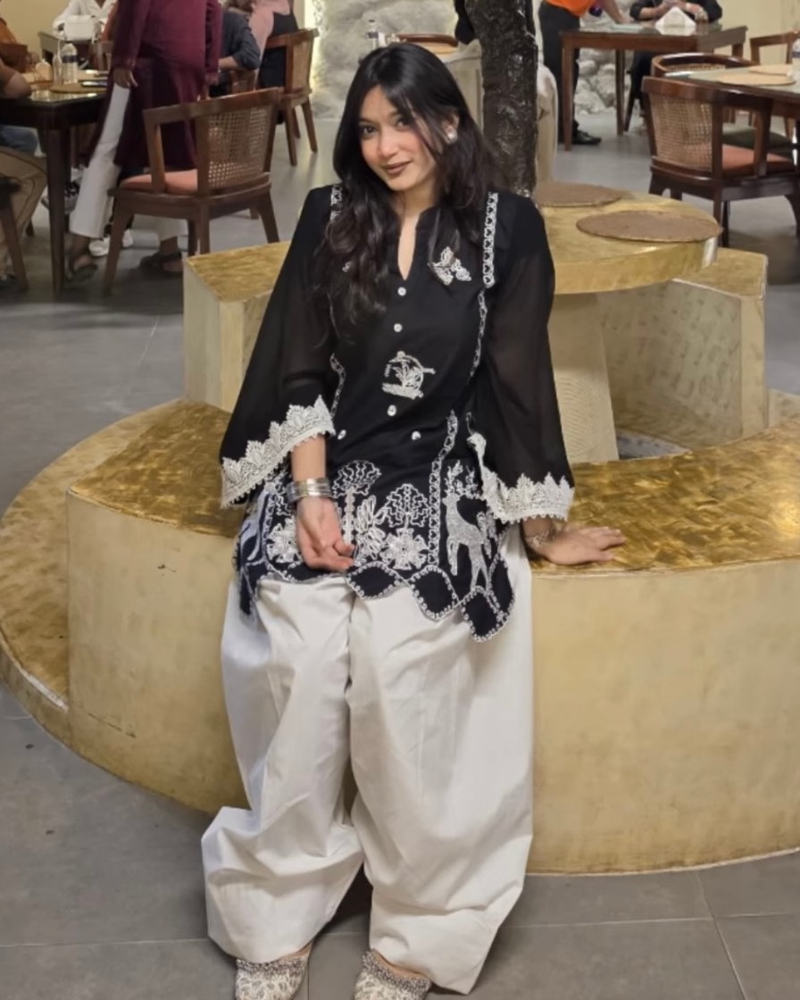

Enter a passcode 🎀
psst — it's your birthday (◕‿◕)
Unlocking your surprise…
CLICK ON GIFTS TO OPEN ✿
three little things, all for you (˶ᵔᵕᵔ˶)
it was hiding till you opened the others ✿
a little snapshot 📸

PLAY 12 11 ✿press the pink button to take a photo 📸
MAKE A WISH 🕯️
close your eyes and make a wish…
I hope this year is as soft and sweet as you are
(and full of good food, obviously).
✧ wish made ✧ (ノ◕ヮ◕)ノ*:･ﾟ✧
a little note for you… ✎
Happy birthday, Saiyeda ✿ I'm not very good at saying things out loud, so I built you a whole little website instead. Seemed easier. Hopefully it counts.
You have this way of making ordinary things feel considered — a good café, a good song, a tidy page of notes, a tiny doodle in the corner. Caring about small beautiful things is rarer than people think, and honestly the world is nicer because you do.
So here's to a year that's kind to you. Slow mornings, strawberry season, music a bit too loud, and people who notice how lovely you are.
Happy birthday, Saiyeda.
I'm really glad I know you 🎂
— from someone who noticed you a while ago (˶ᵔᵕᵔ˶)
✿ you found it ✿
this one wasn't in the row
FOR SAIYEDA // A BOUQUETgrown in the dark, just for you · 12.11
tap to watch it bloom again ✿
for Saiyeda,
flowers — because you like them,
and because I couldn't hand you
real ones today (˶ᵔᵕᵔ˶)